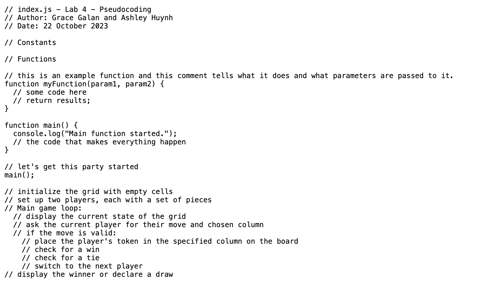

Lab 4 - Pseudocoding and Problem Solving
Challenge
This lab was pretty straightforward! The biggest challenge for us was more operational. We both had funky schedules so it took some time and flexibilty to line everything up to complete the lab together.
Problems
We were fortunate to not have any problems with this lab.
Reflection
I will be curious to see the way this new learned skill acts as a building block for the JS we learn moving forward in the course.
- initialize the grid with empty cells
- set up two players, each with a set of pieces
- Main game loop:
- display the current state of the grid
- ask the current player for their move and chosen column
- if the move is valid:
- place the player's token in the specified column on the board
- check for a win
- check for a tie
- switch to the next player
- display the winner or declare a draw
Results
